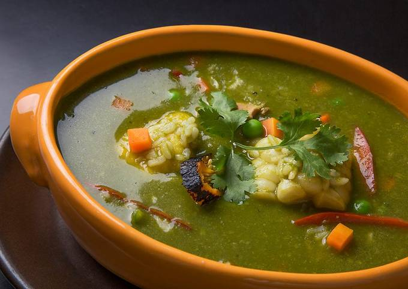
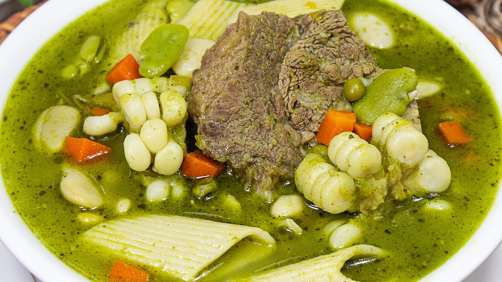
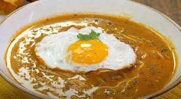
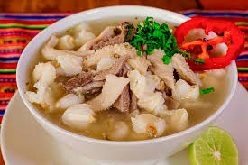
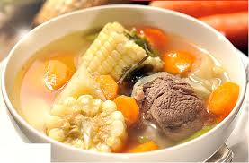

FONDOS
Platos Especiales

También conocido como “levanta muertos”, es una sopa de pollo espesa típica del Perú. Sus ingredientes son muy parecidos a los del arroz con pollo.

Este es uno de los platillos peruanos que cobra protagonismo durante la época de frío.

Se trata de una contundente sopa espesa preparada con una gran variedad de verduras, tubérculos y carnes.

Una de las sopas más icónicas y deliciosas de la cocina peruana es la sopa criolla.

La patasca es un caldo o sopa tradicional de la cocina andina que se prepara con mote y carne.

plato típico de la gastronomía peruana y nace de la unión de dos comidas tradicionales.